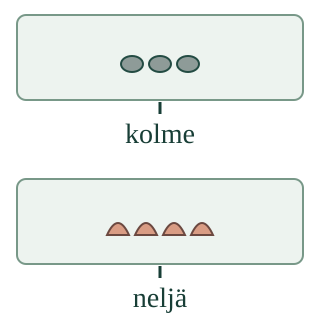

<link rel="stylesheet" href="lesson.css">


<section data-teaching-step="1" data-lesson-role="teaching-step">
<p class="lesson-intro"> Aava kertoo Loikalle, montako rasiassa on.</p>
<h2>Määrälle oma lukusana</h2><p><strong>Yhdistän määrän lukusanaan.</strong></p>
<p>Näitä on neljä. Sana <strong>neljä</strong> kertoo koko joukon määrän, ei vain viimeistä esinettä.</p>
<figure data-lesson-role="worked-example"><figcaption>Kun kuulet tai luet kolme, etsi kolmen joukko. Aikuinen saa lukea sanat.</figcaption></figure>
</section>


<section data-teaching-step="2" data-lesson-role="teaching-step">
<p data-lesson-role="question"><strong>Mieti:</strong> esineet siirtyvät kauemmas toisistaan. Tuliko niitä lisää? </p><details data-lesson-role="answer"><summary>Paljasta ajatus</summary><p>Pelkkä siirtäminen ei muuta määrää eikä sopivaa lukusanaa.</p></details>
</section>


<section data-teaching-step="3" data-lesson-role="teaching-step">
<h3>Rakenna parit</h3><p>Liitä kumpaankin kuvaan sen koko määrää tarkoittava sana. Voit vastata heti tai laskea. Kokeile sitten <strong>Korjaa laput</strong> ja <strong>Uusi tilanne</strong>.</p>
</section>


<section data-teaching-step="4" data-lesson-role="teaching-step">
<div data-qty-lab><p>Ilman harjoitusta: tee kolme ja neljä esinettä sisältävät joukot. Liitä niihin sanalaput kolme ja neljä. Vaihda asettelua määrää muuttamatta.</p></div>
<details data-lesson-role="hint"><summary>Apua</summary><p>Voit laskea jokaisen esineen kerran. Viimeinen lukusana kertoo koko määrän. Jos tiedät määrän heti, saat vastata suoraan. Aikuinen voi lukea ohjeet ja sanat.</p></details>
</section>


<section data-teaching-step="5" data-lesson-role="teaching-step">
<details data-lesson-role="teaching-step"><summary>Kokeile lisää ilman ruutua</summary><p>Tee kaksi erilaista neljän esineen joukkoa. Liitä kumpaankin samaa määrää tarkoittava lappu. Siirrä esineet uuteen järjestykseen. Tarvitaanko uusi lappu? Voit osoittaa vastauksesi.</p></details>
</section>


<details data-lesson-role="teacher-note"><summary>Aikuiselle: tavoite ja rajat</summary><p>Vuosiluokat 1–2. Vaadittu esitieto on M-NUM-02, kardinaliteetti. Tässä rakennetaan kuvan määrän ja annetun lukusanan vastaavuus useassa tilanteessa; määrää ei tarvitse kierrättää numeromerkin kautta. Sanalapun saa lukea aikuinen. Sanan valinta tai kuvaan liittäminen ei osoita vapaata suullista tuottamista, lukemista tai kirjoittamista.</p><p>Liikkeessä säilyvät samat esineet; pidentynyt rivi ei tarkoita lisää esineitä. Laskumalli on erillistä apua eikä muuta oppijan parivastausta. Väärä vastaus ei yksin kerro, miten lapsi laski. Ilman laitetta kokeilkaa samoja suhteita todellisilla esineillä. Ruutu ei arvioi fyysistä toimintaa, itsenäisyyttä, pysyvää oppimista tai formaalia hallintaa eikä tallenna henkilöhistoriaa.</p></details>


<section data-teaching-step="6" data-lesson-role="teaching-step">
<p data-lesson-role="question"><strong>Lopuksi:</strong> neljä esinettä siirretään uuteen järjestykseen. Mikä sana kuuluu niille nyt?</p>
</section>


